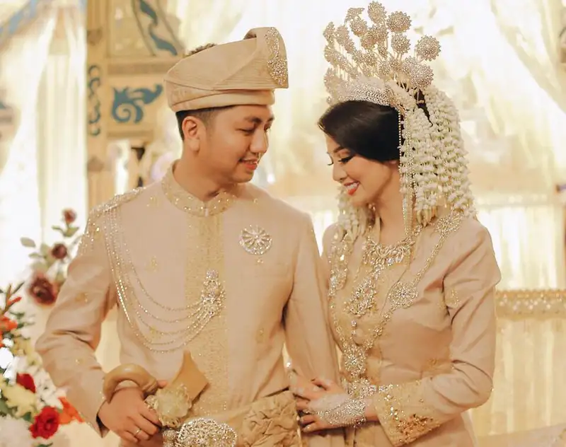
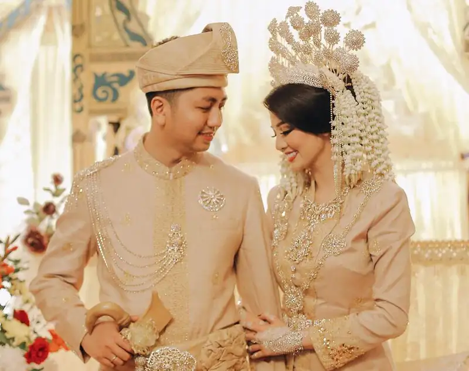

Suku Melayu
Keindahan Budaya Melayu
Suku Melayu merupakan salah satu suku terbesar di Indonesia, dengan budaya yang kaya, termasuk bahasa, sastra, dan seni yang sangat khas. Suku ini tersebar di seluruh Indonesia, dengan pusat kebudayaan di wilayah Sumatra dan Kalimantan.
Lihat Detail
 
